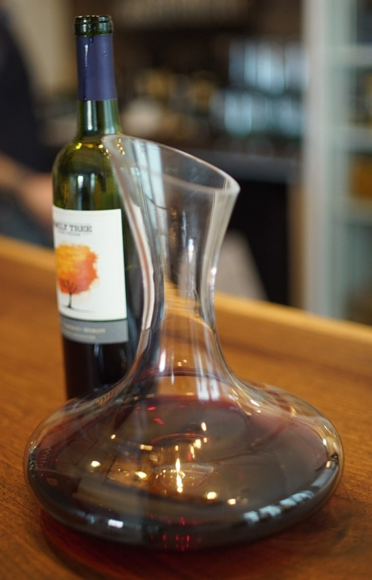

О культуре пития .. Понятие и технология декантации вин.


Споры о полезности и целесообразности декантации вин не утихают до сих пор. Для одних сомелье это лишь красивый ритуал, другие видят в нем много преимуществ. Декантация вина – это переливание вина из бутылки в специальный графин для насыщения кислородом (аэрации), очистки от осадка на дне и создания торжественной атмосферы дегустации. В основном декантируют только красные вина. Но есть белые сорта, которые после насыщения кислородом лучше раскрывают ароматические и вкусовые свойства. С точки зрения полезности декантация шампанского не имеет смысла, это просто красивый ритуал.
Декантировать вино начали несколько веков назад для красивой сервировки стола. В те времена стеклянные бутылки были роскошью, а вино продавали в бочках. Чтобы выглядеть презентабельно, владельцы заведений начали переливать напиток в графины. О ритуале с четкой последовательностью действий речь не шла, он появился позже. Однако даже после широкого распространения бутылок традиция декантирования осталась и приобрела новый смысл.
В первую очередь декантации подлежат молодые красные вина, не прошедшие фильтрацию, и напитки из винограда сортов Мальбек, Каберне Совиньон, Сира, Гренаш с выдержкой от 2 до 15 лет. Также можно декантировать качественные белые бургундские вина.
Простые столовые вина из супермаркета не имеют осадка и уникального вкуса, раскрывающегося после аэрации, поэтому не нуждаются в декантировании.
Некоторые сомелье считают, что перед декантированием бутылка вина должна несколько дней находиться в горизонтальном положении, чтобы весь осадок собрался на одной стороне бутылки. Зачастую этим правилом пренебрегают, особенно если в вине мало осадка.

Одна из самых популярных форм декантера
Инструкция по декантации вина
– Сполоснуть хрустальный графин (декантер) горячей водой.
– Зажечь свечу на столе, она станет дополнительным источником света, позволяющим вовремя увидеть осадок возле горлышка бутылки.
– Повернуть вино к гостям этикеткой, назвав производителя, аппелласьон (винодельческий регион) и год сбора урожая.
– Обрезать капсулу под кольцом, положить срезанную фольгу себе в карман. Протереть горлышко бутылки, чтобы убрать налет.
– Рычажным штопором извлечь пробку на три четверти. Обхватить ее рукой, после чего вынуть полностью. При этом очень важно не допустить хлопка, портящего торжественность момента.
– Осмотреть и понюхать пробку. Не должно чувствоваться запаха плесени или затхлости, свидетельствующего об испорченности вина.
– Положить пробку на блюдечко и поставить его возле гостей.
– Еще раз протереть горлышко бутылки.
– Вначале сомелье сам пробует вино, налив себе немного в бокал, повернувшись к гостям вправо или влево.
– Медленно перелить вино из бутылки в графин, при этом осадок не должен попасть в декантер. Чтобы следить за осадком, горлышко лучше держать над светом.
– Для насыщения кислородом вино в декантере несколько раз раскрутить по часовой стрелке. Перед наполнением бокалов напиток должен постоять 5—10 минут.